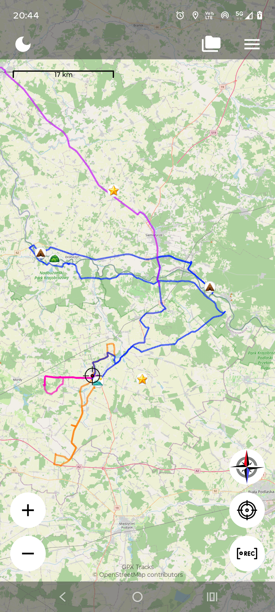
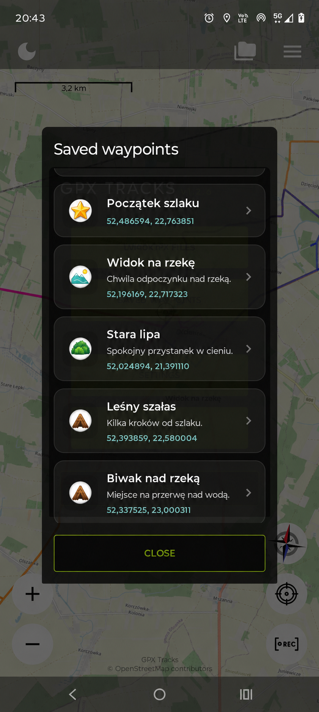
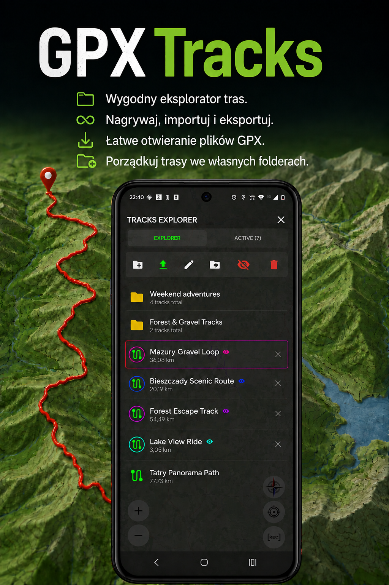
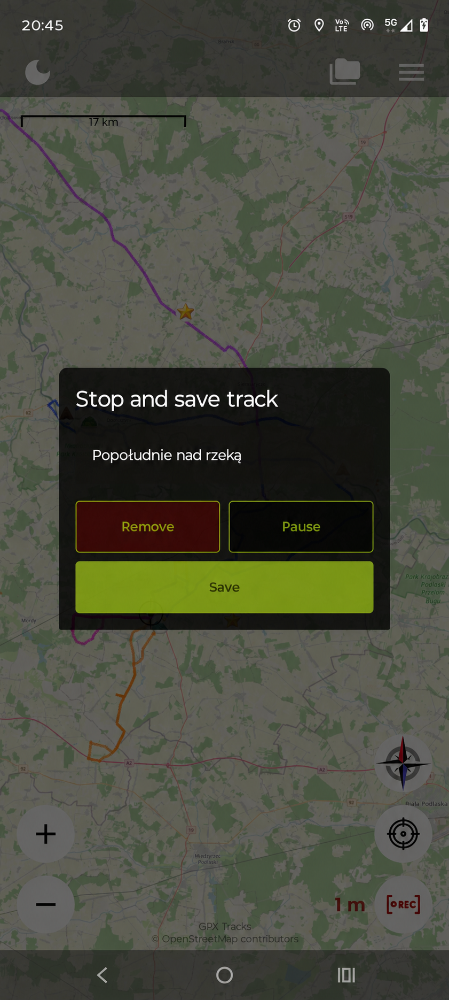
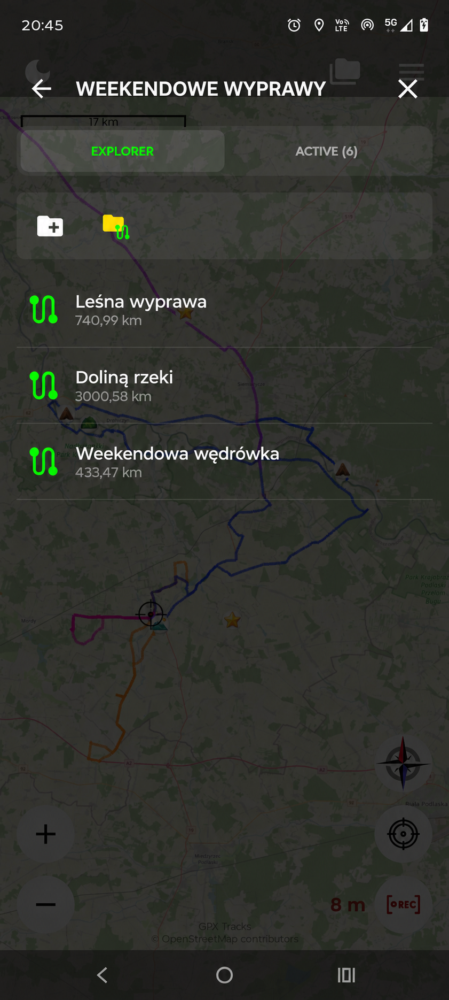
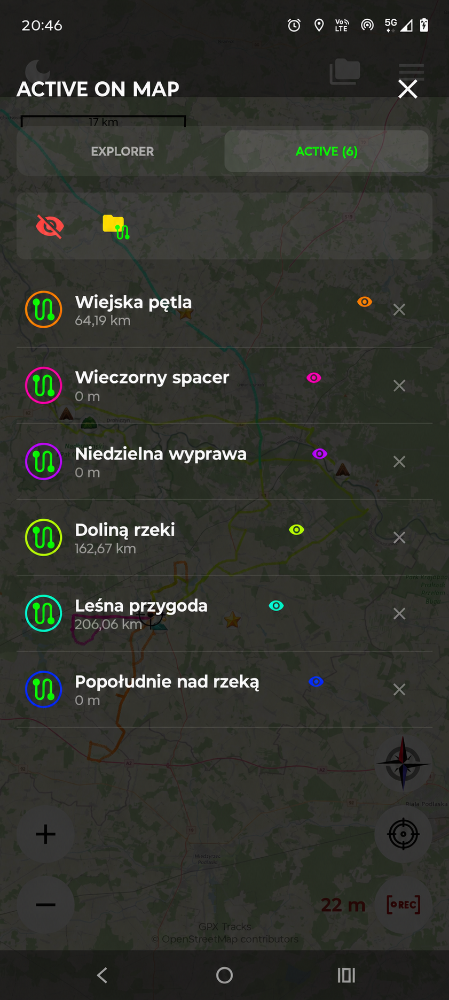
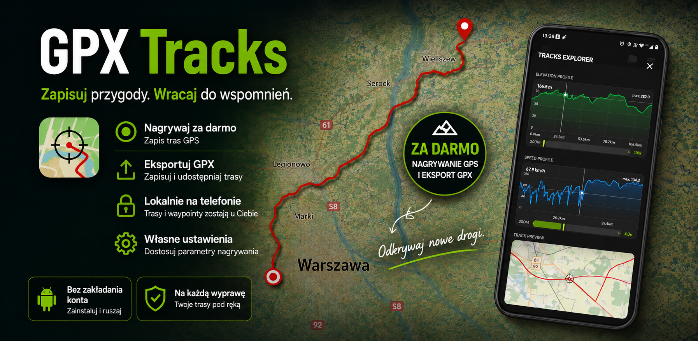

Ruszaj własną drogą.
Nagrywaj trasę GPS i sprawdzaj pokonany dystans. Po zakończeniu nadaj jej nazwę i zachowaj ją na kolejny raz.
TWOJE TRASY. TWOJE MIEJSCA. TWOJA KOLEJNA PRZYGODA.
Nagraj spacer lub przejażdżkę. Zapisz widok nad rzeką, spokojne miejsce na odpoczynek czy początek szlaku — i wracaj do nich na mapie, kiedy zechcesz.
Na Androida · Bez zakładania konta · Darmowe nagrywanie GPS i eksport GPX

OD PIERWSZEGO KROKU DO OSTATNIEGO PRZYSTANKU
Nagrywaj trasę GPS i sprawdzaj pokonany dystans. Po zakończeniu nadaj jej nazwę i zachowaj ją na kolejny raz.
Dodaj punkt z nazwą, notatką i ikoną. Zapamiętaj, gdzie został samochód, skąd był najlepszy widok albo gdzie udało się znaleźć trochę cienia.
Otwieraj pliki GPX, importuj trasy do biblioteki i układaj je w folderach. Wyeksportuj trasę, gdy chcesz ją komuś udostępnić.
POZNAJ WAYPOINTY
Waypoint to miejsce zapisane na mapie. Nadaj mu czytelną nazwę, dodaj krótką notatkę i wybierz ikonę, dzięki której łatwo je rozpoznasz.

ZACZNIJ W KILKA CHWIL
Dotknij wybranego miejsca na mapie i przytrzymaj, aby otworzyć formularz punktu.
Wpisz nazwę, dodaj opcjonalną notatkę i wybierz ikonę. Naciśnij Save, aby zapisać punkt.
Otwórz menu, wybierz Saved waypoints i dotknij zapisanego punktu.

MIEJSCE NA TWOJE PLIKI GPX
Przechowuj nagrane i zaimportowane trasy w jednym miejscu. Porządkuj wyprawy w folderach i wyświetlaj kilka tras na mapie w różnych kolorach.
Otwarcie pliku GPX pozwala go podejrzeć. Zaimportuj go, jeśli chcesz zachować trasę w swojej bibliotece.
Jak korzystać z plików GPX →PRZYJRZYJ SIĘ Z BLISKA



NA TWOIM TELEFONIE. POD TWOJĄ KONTROLĄ.
Trasy i waypointy są przechowywane lokalnie. Nie potrzebujesz konta. Opcjonalne Firebase Analytics możesz wyłączyć w ustawieniach (Settings); nie obejmuje współrzędnych tras ani treści waypointów.
Mapy online wymagają internetu. Ich dostawcy otrzymują żądania dotyczące oglądanego obszaru oraz standardowe dane połączenia.
Przeczytaj politykę prywatności →
{kind=link}
{kind=link}
{kind=link}